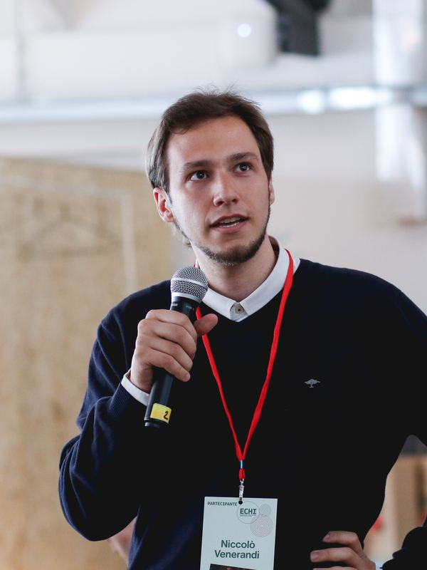
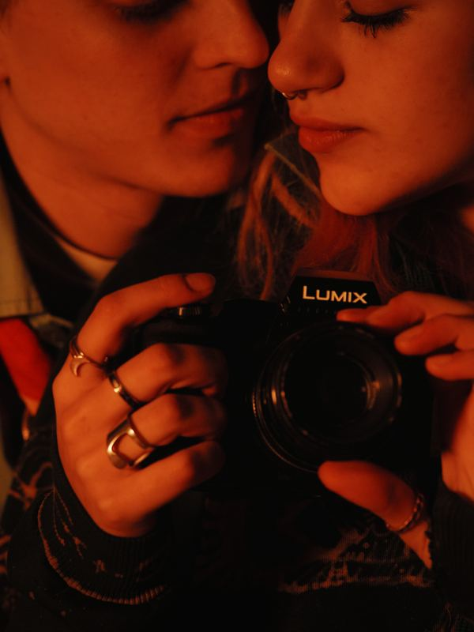
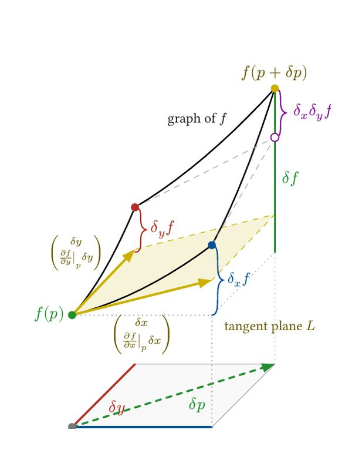

NV 400▸ 0

0A00
Photography &
videomaking
Photography and video for political campaigns and events: Silvia Salis, Andrea Orlando, Andrea Martella, Elly Schlein, and others.
Open the galleryTech journalism
I run LibreNews, a publication about Linux and free software, and the YouTube channel Nicco Loves Linux.
Read LibreNewsFilmmaking
I write and direct. Passaggi (2026) is in post-production. Lucie vs. the Techbros: coming-of-age in the age of human extinction.
NV 400▸ 4

4A04
NV 400▸ 5

5A05
Mathematics
Mathematics at the University of Genova, graduating in September 2026. I like calculus and geometry done with pictures.
Poetry
Three collections in Italian. Nicco Loves Poetry: short videos on rap and metre.
Watch Nicco Loves Poetry